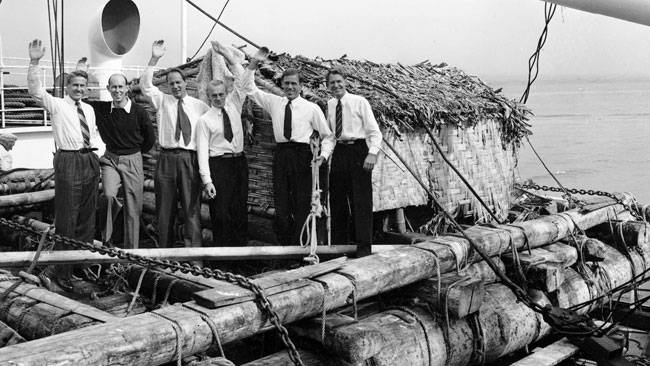

Tripulacion de kon-tiki
Thor Heyerdahl
Thor Heyerdahl se hizo célebre por la expedición Kon-tiki de 1947, que navegó por el Pacífico en una balsa construida con troncos, plantas y materiales naturales de Sudamérica. Navegó 8000 kilómetros desde Perú hasta el archipiélago Tuamotu. La balsa estaba tripulada por seis hombres: Heyerdahl, Knut Haugland, Bengt Danielsson, Erick Hesselberg, Torstein Raaby y Herman Watzinger. Esta expedición demostró que no había razones técnicas para impedir que los habitantes de América del Sur se hubieran establecido en las islas de la Polinesia. No obstante, basándose en elementos físicos y genéticos, la mayoría de antropólogos continúa pensando que la Polinesia fue colonizada desde el Oeste hacia el Este, con migraciones que partían del continente asiático.
Erik Hesselberg
Erik Hesselberg nació en Brevik en Telemark, Noruega. Creció en Larvik en Vestfold. Él lo sabía Thor Heyerdahl desde sus años de infancia. Tras graduarse de la escuela secundaria, Erik Hesselberg ingresó en una escuela de marineros y más tarde trabajó como marinero profesional durante cinco años, realizando varios viajes alrededor del mundo. Posteriormente Hesselberg estudió arte en Hamburgo, Alemania Se quedó en Alemania cuando Segunda Guerra Mundial comenzó, por lo que no pudo regresar a Noruega y comenzó a trabajar como decorador en Braunschweig. En 1945, él y su esposa nacida en Alemania, Liselotte (Liss) Güldner, se mudaron a Lillehammer, Noruega.Bengt Danielsson
Bengt Danielsson (Krokek, 6 de julio de 1921 - Estocolmo, 4 de julio de 1997) fue un explorador, antropólogo y escritor sueco, miembro de la tripulación de la expedición en balsa Kon-tiki, la cual tuvo como recorrido el océano Pacífico desde el Perú hasta la Polinesia Francesa en el año de 1947.
Torstein Raaby
Raaby nació en el pueblo de Dverberg en la isla de Andøya en Nordland, Noruega. Durante Segunda Guerra Mundial se convirtió en un Servicio Secreto de Inteligencia oficial, habiendo iniciado su formación en 1943. Pasó diez meses escondido en el pueblo de Alta, enviando informes detallados sobre los buques de guerra alemanes y sus instalaciones de radar a Inglaterra a través de un aparato de radio oculto conectado subrepticiamente a la antena de un oficial alemán. Sus informes fueron fundamentales para ayudar a la RAF para encontrar y desactivar permanentemente el acorazado Tirpitz. Por esa y otras operaciones encubiertas durante la guerra, Raaby recibió la más alta condecoración de Noruega por su valentía militar, la Cruz de Guerra con espada en 1944 y el DSO británico. Raaby tenía el rango de segundo teniente (Fenrik).
Herman Watzinger
Él conoció Thor Heyerdahl en Ciudad de Nueva York, donde se le pidió que participara en la construcción del Kon-Tiki navega en balsa y conviértete en miembro de la expedición. A bordo de la balsa, donde era el segundo al mando, era responsable de meteorológico y hidrográfico mediciones
Knut Haugland
se unió a la expedición Kon-Tiki como operador de radio después de ser puesto en licencia para este viaje, en colaboración con American Radioaficionados principalmente se encargó de ello además Torstein Raaby para contacto por radio y transmisión meteorológico Y Hidrográfico Datos. El experimento „Kon-Tiki“ fue un éxito que inicialmente impresionó al público, pero en última instancia también a la comunidad arqueológica. Haugland había contribuido bastante a ello. Después de la expedición reanudó su servicio militar y sirvió inicialmente hasta 1949 destinado en Alemania.
